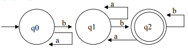
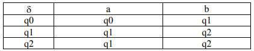
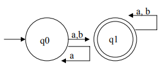
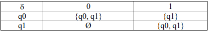
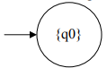
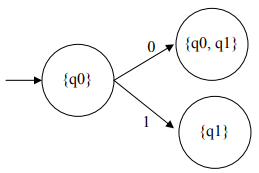
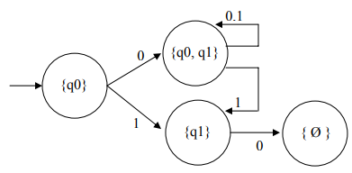
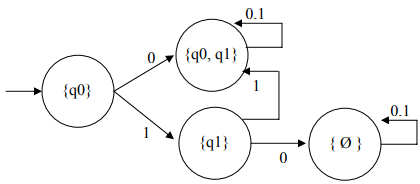
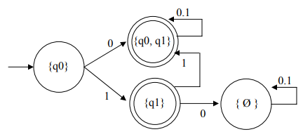

Sekilas tentang Finite Automata
Finite automata adalah model matematika sistem dengan masukan dan keluaran diskrit. Sistem dapat berada di salah satu dari sejumlah berhingga konfigurasi internal disebut state. State merupakan ringkasan informasi yang berkaitan dengan masukan-masukan sebelumnya yang diperlukan untuk menentukan pelaku sistem pada masukan-masukan berikutnya.
Finite Automata memiliki jumlah state yang banyaknya berhingga dan dapat berpindah-pindah dari suate state ke state yang lainnya. Finite Automata dibagi menjadi Deterministic Finite Automata (DFA) dan Non Deterministic Finite Automata (NFA).
Deterministik Finite Automata
Pada DFA dari suatu state ada tepat satu state berikutnya untuk setiap simbol input (masukan) yang di terima.
Contoh :
Konfigurasi DFA contoh 1 secara formal adalah sebagai berikut :
Q = {q0, q1, q2}
Σ = {a, b}
S = q0
F = {q2}
Fungsi-fungsi transisinya sebagai berikut :
δ (q0, a) = q0, δ (q0, b) = q1,
δ (q1, a) = q1, δ (q1, b) = q2,
δ (q2, a) = q1, δ (q2, b) = q2.
Jika disajikan dalam tabel transisi :
* Dalam DFA, selalu dan pasti terdapat satu state berikutnya untuk setiap pasangan state input
Non-Deterministik Finite Automata
Pada NFA dari suatu state bisa terdapat nol (0), satu (1), atau lebih busur keluar (transisis) berlabel simbol yang sama. Jadi setiap pasangna state-input, kita bisa memiliki 0 atau lebih pilihan untuk state berikutnya.
Contoh :

Pada NFA contoh 2 diatas terdapat dua busur keluar berlabel input ‘a’. Dari state q0 bila
mendapat input ‘a’ bisa berpindah ke state q0 atau q1 yang secara formal dinyatakan : δ
(q0, a) = {q0, q1}
Konfigurasi NFA contoh 2 secara formal adalah sebagai berikut :
Σ = {a, b}
S = q0
F = {q1}
Tabel transisinya :
Kita mulai dengan state {q0} :

Telusuri state berikutnya :
• δ (q0, 0) = {q0, q1 }
• δ (q0, 1) = {q1}
Hasilnya :

Selanjutnya telusuri untuk setiap state baru yang terbentuk :
• δ (q1, 0) = Ø
• δ (q1, 1) = {q0, q1}
• "δ ({q0,q1}, 0) = {q0, q1}" adalah hasil gabungan dari "δ (q0, 0) = {q0, q1}dengan δ (q1, 0) = Ø"
• "δ ({q0,q1}, 1) = {q0, q1}" adalah hasil gabungan dari "δ (q0, 1) = {q1}dengan δ (q1, 0) = {q0, q1}"
Hasilnya :

Selanjutnya telusuri state baru yang terbentuk :
• δ (Ø, 0) = Ø
• δ (Ø, 0) = Ø
Hasilnya :
Selanjutnya kita ingat bahwa F = {q1} maka himpunan state akhir (F) sekarang adalah semua yang mengandung state q1.
F = {{q1}, {q0, q1}}
Hasilnya :
